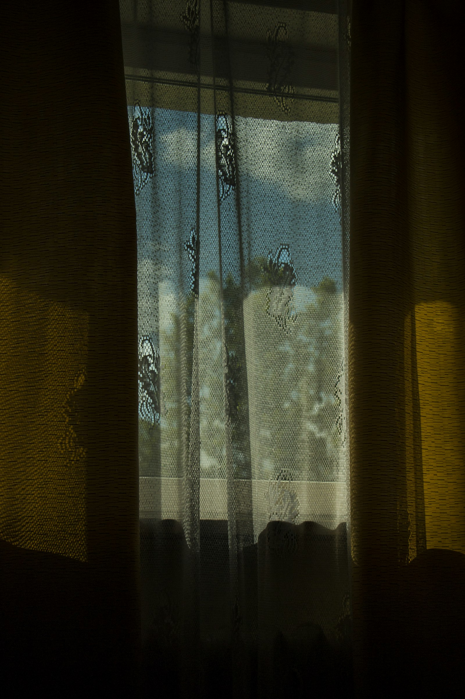
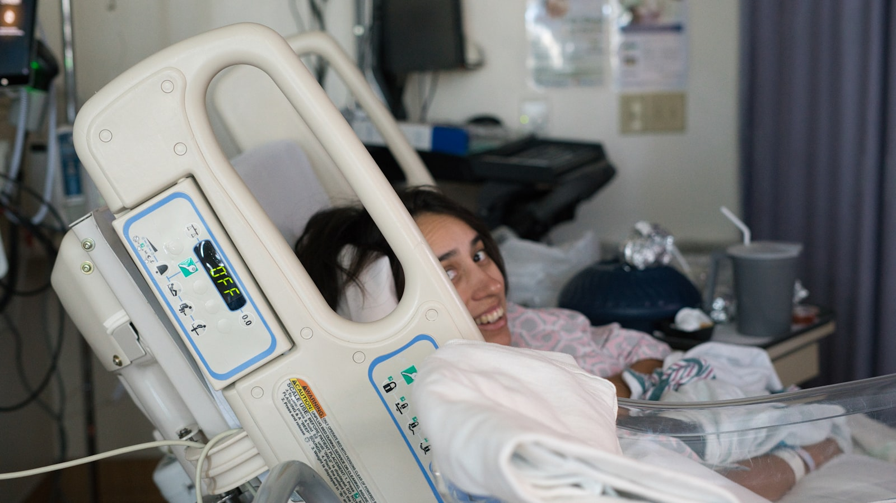

Depressiyanın Müalicəsi
cavab verən bioloji vəziyyət. CBT və medikamentoz yanaşma.
Depressiyanın əlamətləri
Bu simptomlardan biri iki həftədən çox davam edirsə, bu artıq əhval deyil — mütəxəssisə müraciət etmək lazımdır
Davamlı Kədər
Boşluq, ümidsizlik, «heç nəyin fərqi yoxdur» hissi. Keçici əhval deyil, günlərlə davam edən vəziyyət.
Enerji İtkisi
Sadə işləri yerinə yetirmək belə böyük güc tələb edir. Yorğunluq yatmaqla keçmir.
Maraq Azalması
Əvvəllər zövq verən fəaliyyətlər artıq cəlbedici deyil. Sevdiklərindən uzaqlaşma.
Yuxu Pozğunluğu
Həddindən artıq yatma və ya yata bilməmə. Hər iki variant depressiyanın siqnalı ola bilər.
Özünü Günahlandırma
Hər şeyi özünə bağlama, dəyərsizlik hissi, özünə tənqidin həddindən artıq artması.
Cismani Şikayətlər
Baş ağrısı, qarın ağrısı, iştah dəyişikliyi — tibbi səbəb tapılmayan fiziki simptomlar.
Terapiya necə aparılır?
KDT, dəstəkləyici psixoterapiya və psixotəhsil — sınanmış birləşmə
Klinik Qiymətləndirmə
Depressiyanın növü, şiddəti və müddəti müəyyənləşdirilir. Tibbi tarixçə nəzərdən keçirilir.
Düşüncə Nümunələrinin İşlənməsi
KDT metodları ilə mənfi avtomatik düşüncələr tanınır və real alternativlərə çevrilir.
Davranış Aktivasiyası
Kiçik addımlardan başlayan fəaliyyət planı hazırlanır. Həyat yenidən mənalı hiss etməyə başlayır.
Qaytanma Qarşısının Alınması
Depressiyanın yenidən başlamasını tanımaq və dayandırmaq üçün fərdi plan hazırlanır.
Konsultasiya Qiymətləri
Tək sessiya və ya aylıq terapiya paketi — sizə uyğun formatı seçirik
BirBank, TamKart, BolKart, WorldKart ilə ödəniş mümkündür. Bank köçürməsi qəbul edilir.
Depressiya Haqqında Məqalələr
Depressiyanın diaqnostikası, müalicəsi və gündəlik həyata qayıdış barədə elmi əsaslı yazılar
-

Məqalə · 9 dəq oxuma Depressiya Kədərdən Necə Fərqlənir? — 7 klinik əlamət › -
 Məqalə · 11 dəq oxuma
KDT Depressiyada Necə İşləyir? — prinsiplər və protokol
›
Məqalə · 11 dəq oxuma
KDT Depressiyada Necə İşləyir? — prinsiplər və protokol
›
- Məqalə · 9 dəq oxuma Antidepressantlar — Faktlar və Miflər ›
-

Məqalə · 8 dəq oxuma Postpartum Depressiya — Tanımaq və Müalicə › - Məqalə · 7 dəq oxuma Mövsümi Depressiya (SAD) və İşıq Terapiyası ›